Trayectoria
La Banda de Payuco ha estado ligada a la historia y al desarrollo cultural del municipio de La Ceja y del Departamento de Antioquia. Es una de las bandas tradicionales más antigua del municipio y de la región. Desde sus inicios, la banda ha participado en grandes eventos de carácter musical, social, religioso y político; realizando importantes fusiones con los grupos, academias y los músicos nacionales e internacionales. El 20 de Julio del año 2010 en conmemoración del bicentenario de la independencia de Colombia, reciben una resolución municipal pormedio de la cual se hace un reconocimiento a La Banda de Payuco y es declarada Patrimonio Cultural del municipiode La Ceja del Tambo. En el año 2011 es nombrada como “Alcalde Honorario de las XXXIV Fiestas del Toldo y de las Flores”, del mismo municipio.
Guillermo Cardona, Gerardo Cardona, Francisco Martínez, Jairo López.
En el año 2015 la banda es ganadora de la Quinta Convocatoria de Circulación Artística y Cultural del Instituto de Cultura y Patrimonio de Antioquia, lo que le permitió estar como banda invitada para representar y llevar toda nuestra tradición musical al Internacional Band Festival Villa Carlos Paz Córdoba - Argentina, donde realizó una gira de conciertos en la comunidad Cordobesa, sueño que se cumplió gracias al apoyo de la comunidad cejeña. En el año 2017, la Banda de Payuco es merecedora del premio “TODA UNA VIDA DEAPORTES A LA CULTURA CEJEÑA”, en la primera convocatoria local que se otorga en el marco de Celebra la Música en el municipio de La Ceja.
 ALBORADA EN FIESTAS DE LA VIRGEN DEL CARMEN, MUNICIPIO DE LA CEJA, JULIO DEL AÑO 1995DE IZQUIERDA A DERECHA
ALBORADA EN FIESTAS DE LA VIRGEN DEL CARMEN, MUNICIPIO DE LA CEJA, JULIO DEL AÑO 1995DE IZQUIERDA A DERECHA Elkin López (Clarinete) Jairo Bedoya (Trombón) Guillermo Ramírez (Eufonio-Bombardino) Álvaro López (Tuba) Jimmy López (Clarinete) Wilson López (Trompeta) Jairo López (Trompeta) Orlando Carmona (Trombón) Silvio López (Saxofón) Gerardo Cardona (Trompeta) José Villada (Tuba) Jhon Jairo Bedoya (Trombón) Darío Carmona (Eufonio-Bombardino) Heriberto López (Trompeta)
EN FRENTE
Guillermo Carmona (Bombo)Ricardo López Marulanda (Redoblante)
Para el año 2018, la Banda de Payuco participa en importantes eventos como: el Festival de música religiosa en El Centro Comercial Viva La Ceja, La Ceja Celebra la Danza concierto fusión con el grupo de baile Euphoria, Retretas dominicales La Ceja del Tambo “Así suena mi Pueblo”, Tercer Festival de Bandas de Música del Parque Comfama Tutucán, inaguración del Festival Internacional de Teatro “El Gesto Noble” en el Municipio de El Carmen de Viboral, Concierto “Orden Cincuentenario” celebración 50 años de la Asociación de Ingenieros egresados de la Facultad de Minas Universidad Nacional de Colombia, conciertos octava edición de “Celebra la Música”en los Municipios de La Ceja del Tambo, Sonsón y El Carmen de Viboral y encuentro departamental de Bandas Fiestas de los Negritos El Retiro - Antioquia. Además participa como invitada a la grabación de la nueva versión musical del Himno Municipal de La Ceja del Tambo.Actualmente, la Banda de Payuco está conformada por 32 músicos logrando tomar otro aire con jóvenes que siguen aportándole a esta descendencia de músicos. Desde el año 2015 la banda cuenta con una escuela de enseñanza dedicada a la formación musical de las nuevas generaciones de músicos del municipio y la región.
DE IZQUIERDA A DERECHA
Álvaro López (Tuba) Guillermo Carmona (Bombo y platillo) Ricardo López (Redoblante) Heriberto López (Trompeta) Silvio López (Saxofón) Jairo López (Trompeta) Elkin López (Clarinete) Darío Carmona (Eufonio-Bombardino) José Villada (Tuba)
GENERACIÓN DE MÚSICOS(PADRES) ALVARO LOPEZ GARCIA – ANA MARIA LOPEZ LOPEZ PRIMERA GENERACIÓN (HIJOS) Marco Tulio, Otilia, Onofre, Luis Felipe, Miguel Ángel (5 músicos) SEGUNDA GENERACIÓN (NIETOS) Jairo, Gustavo, Guillermo, Gonzalo, Francisco (Pacho), Alvarito, Jesús (Chucho), Gerardo, Heriberto, Leónidas, Héctor, Horacio, Cesario, Silvio (14 músicos) TERCERA GENERACIÓN (BISNIETOS) William, John Iván, Marisol, Alexander, Ricardo, Jorge, Wilson, Jimmy, Gabriel, Gladis, Alejandro (pachanga), Guillermo, Alex, Alba, Santiago, Camilito, David, Cristian, Sara, Mariana, Julián, Mónica, Julián, Pedro, Ferney (25 músicos) CUARTA GENERACIÓN (TATARANIETOS) Mariana, Luis miguel, Alejandro, Álvaro, Sara, Emiliano, Miguel, Camilo, Federico, Daniela, Juan Camilo, Jorge, Tomas, María José (15 músicos) TOTAL MÚSICOS DESCENDENCIA LÓPEZ: 54 MÚSICOS
 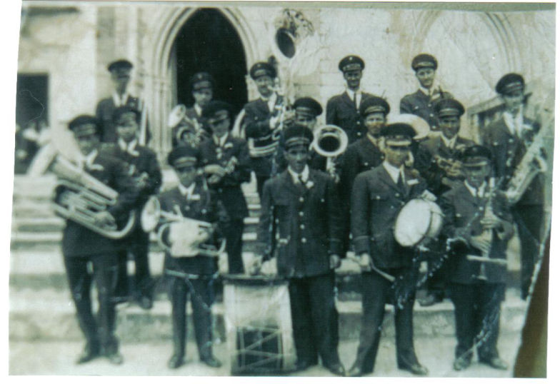
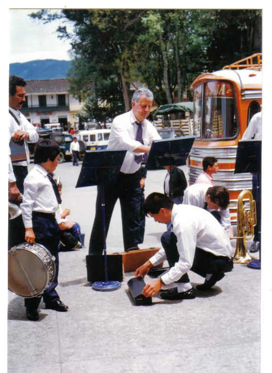
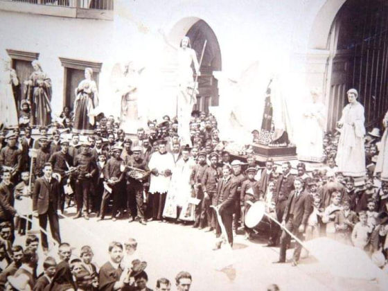
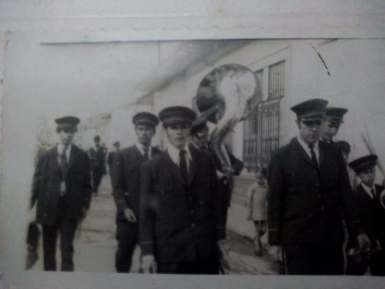
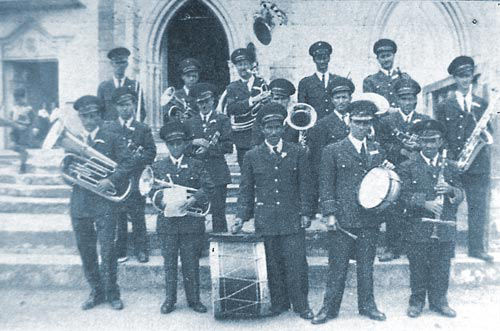
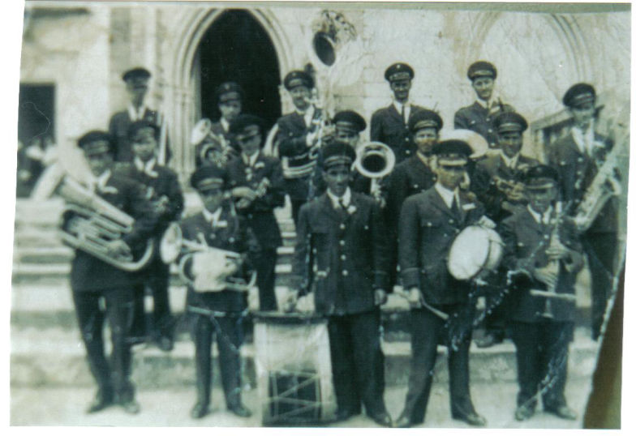
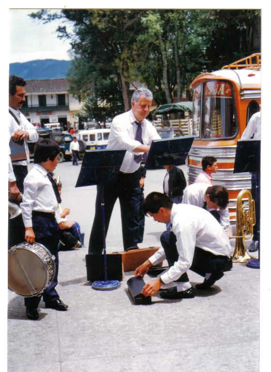
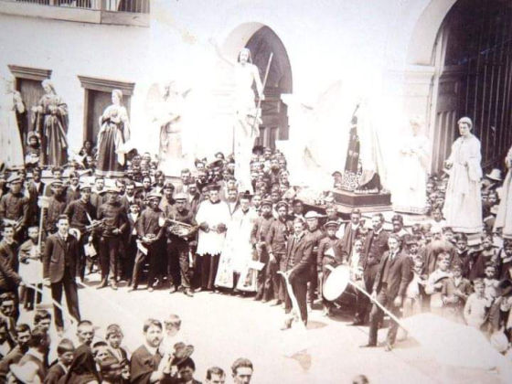
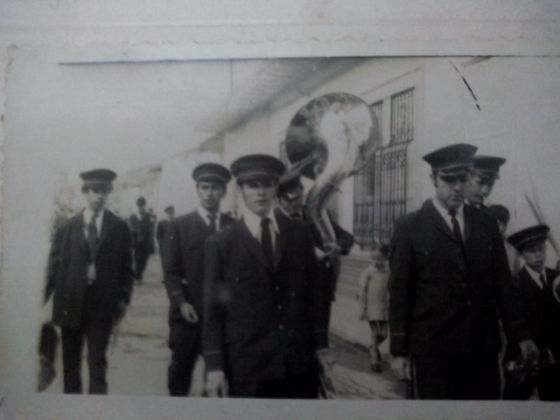
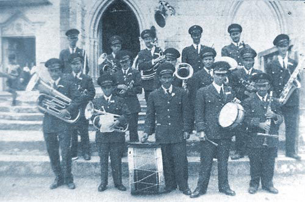
 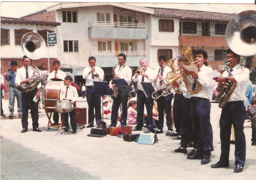
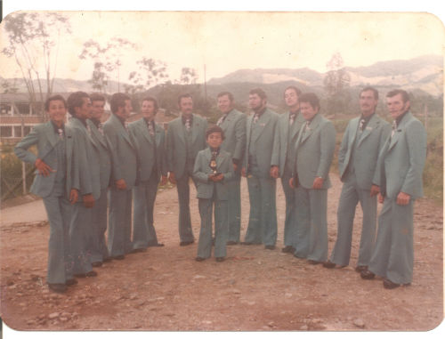
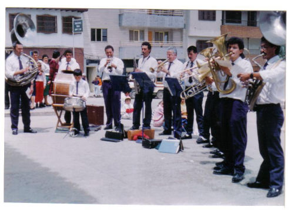
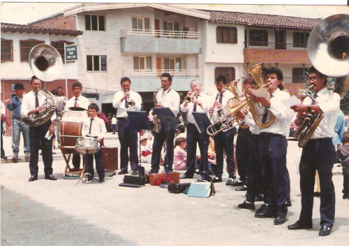
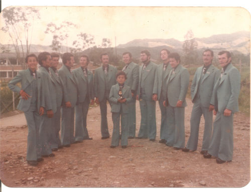
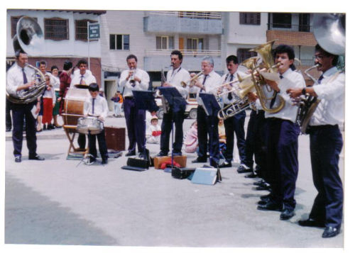